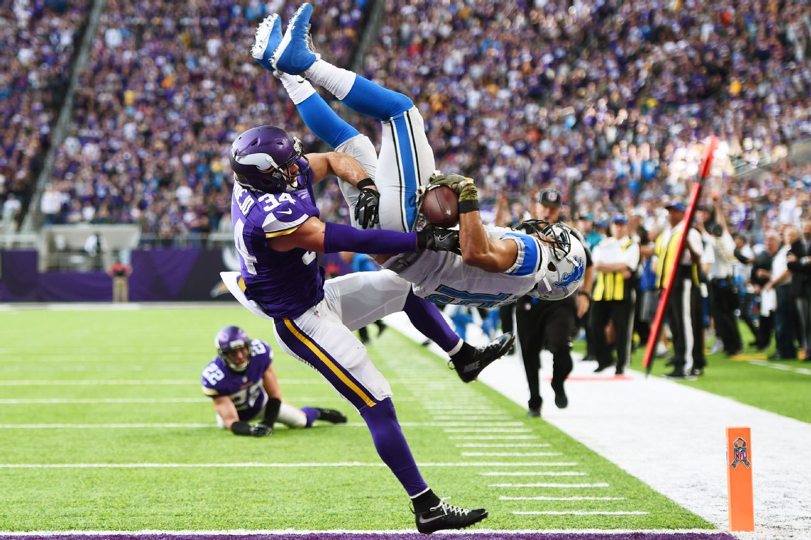

Overview
Survival analysis is used anticipate the time until some event. An event could be cancelling a cable subscription, defaulting on a loan, or any binary outcome. Predicting the occurrence of such events would normally fall under the domain of classification, which assigns a probability between 0 and 1 as to whether an event will occur. However, classification models (e.g., logistic regression) do not account for the fact that, in many cases, the units under study (e.g., people, machines, etc.) are observed for varying periods of time. For example, let’s say we’re interested in studying how long consumers maintain their cable service based on their initial subscription price. Consumers who started their service today will likely remain subscribers tomorrow simply because they have only been active for one day. These consumers are censored, indicating that they have not yet experienced the event. In contrast, nearly all consumers who began their service 15 years ago are probably no longer active today (i.e., uncensored) due to a myriad of factors. Unlike typical classification models, survival models can account for both censored and uncensored data, as well as the influential role of time, during the model building process.
Let’s make these concepts more palatable with a real-life example. Linking abstract concepts, like survival probabilities and censoring, with concrete concepts, like Touchdowns and Coors Light, makes the leap from theory to application much easier. In this post, we’ll use survival analysis to understand how several factors, including Field Position and Draft Pick, affect the number of years a player remains active in the NFL. Here’s what you’ll know by the end:
🏈 The steps required for to format data for survival analysis
🏈 Different approaches to modeling survival rates and evaluating prediction accuracy
🏈 How to intepret and communicate survival model outputs
Let’s get started!
The Data
All data used herein were acquired from this website and can be downloaded from my github account. If you’re curious about the web-scraping specifics, all code is located in the appendix below. Go ahead and download the data to get started. All the libraries we’ll need are loaded or installed via pacman.
library(pacman)
pacman::p_load(rvest,
survival,
kableExtra,
survminer,
ggplot2,
ranger,
pROC,
reshape,
dplyr
)
url = 'https://raw.githubusercontent.com/thecodeforest/nfl_survival_analysis_data/master/nfl_survival_data.csv'
draft_table = read_csv(url)Now we have our data. Let’s clean it up before diving into specifics.
input_df = draft_table %>%
clean_names() %>%
select(player, pos, rnd, pick, year, from, to) %>%
rename(position = pos,
draft_rnd = rnd,
pick_nbr = pick,
draft_year = year
) %>%
filter(position %in% c('QB', 'RB', 'WR')) %>%
mutate(draft_year = as.numeric(draft_year),
draft_rnd = as.numeric(draft_rnd),
pick_nbr = as.numeric(pick_nbr),
from = as.numeric(from),
to = as.numeric(to)
) %>%
filter(draft_year != 2018) %>%
filter(pick_nbr <= 256)| player | position | draft_rnd | pick_nbr | draft_year | from | to |
|---|---|---|---|---|---|---|
| Blake Bortles | QB | 1 | 3 | 2014 | 2014 | 2018 |
| Johnny Manziel | QB | 1 | 22 | 2014 | 2014 | 2015 |
| Teddy Bridgewater | QB | 1 | 32 | 2014 | 2014 | 2018 |
| Derek Carr | QB | 2 | 36 | 2014 | 2014 | 2018 |
| Jimmy Garoppolo | QB | 2 | 62 | 2014 | 2014 | 2018 |
| Logan Thomas | QB | 4 | 120 | 2014 | 2014 | 2018 |
| Tom Savage | QB | 4 | 135 | 2014 | 2014 | 2017 |
| Aaron Murray | QB | 5 | 163 | 2014 | 2014 | 2014 |
| A.J. McCarron | QB | 5 | 164 | 2014 | 2014 | 2018 |
| Zach Mettenberger | QB | 6 | 178 | 2014 | 2014 | 2015 |
| David Fales | QB | 6 | 183 | 2014 | 2014 | 2017 |
| Keith Wenning | QB | 6 | 194 | 2014 | 2014 | 2014 |
| Tajh Boyd | QB | 6 | 213 | 2014 | NA | NA |
| Garrett Gilbert | QB | 6 | 214 | 2014 | 2014 | 2014 |
The initial dataset consists of the 7 variables:
🏈 Player - Player Name
🏈 Position - Field position (QB = Quarterback, RB = Running Back, WR = Wide Receiver)
🏈 Draft Round - The round the player was originally drafted (range 1 - 7)
🏈 Pick Number - The pick the player was originally drafted (range 1 - 256)
🏈 Draft Year - The year the player was drafted into the NFL
🏈 From - The year the player was drafted into the NFL
🏈 To - The most recent year played in the NFL
Below we’ll build two additional features that are central to any survival analysis: Time and Status. Our time variable – yrs_in_nfl – indicates how many seasons the player has participated in at least one regular season game. Status indicates if the player is still playing in the NFL; that is, if they have participated in at least one game during the 2018 regular season. For example, Johnny Manziel played two years for the Cleveland Browns and then left to play in the Canadian Football league at the end of the 2015 season. Thus, his status is 1, indicating he did not survive until the 2018 season and is no longer active. In contrast, Blake Bortles is still playing in the NFL, so his status is a 0, indicating that the event in question – retirement – has not yet happened. Let’s create these two features and revisit our 2014 quarterback cohort.
input_df = input_df %>%
mutate(yrs_in_nfl = (to - from) + 1) %>%
mutate(yrs_in_nfl = ifelse(is.na(from) & is.na(to), 0, yrs_in_nfl)) %>%
mutate(status = ifelse(to == 2018, 0, 1)) %>%
mutate(status = ifelse(is.na(status), 1, status)) %>%
select(player:draft_year, yrs_in_nfl, status)| player | position | draft_rnd | pick_nbr | draft_year | yrs_in_nfl | status |
|---|---|---|---|---|---|---|
| Blake Bortles | QB | 1 | 3 | 2014 | 5 | 0 |
| Johnny Manziel | QB | 1 | 22 | 2014 | 2 | 1 |
| Teddy Bridgewater | QB | 1 | 32 | 2014 | 5 | 0 |
| Derek Carr | QB | 2 | 36 | 2014 | 5 | 0 |
| Jimmy Garoppolo | QB | 2 | 62 | 2014 | 5 | 0 |
| Logan Thomas | QB | 4 | 120 | 2014 | 5 | 0 |
| Tom Savage | QB | 4 | 135 | 2014 | 4 | 1 |
| Aaron Murray | QB | 5 | 163 | 2014 | 1 | 1 |
| A.J. McCarron | QB | 5 | 164 | 2014 | 5 | 0 |
| Zach Mettenberger | QB | 6 | 178 | 2014 | 2 | 1 |
| David Fales | QB | 6 | 183 | 2014 | 4 | 1 |
| Keith Wenning | QB | 6 | 194 | 2014 | 1 | 1 |
| Tajh Boyd | QB | 6 | 213 | 2014 | 0 | 1 |
| Garrett Gilbert | QB | 6 | 214 | 2014 | 1 | 1 |
Great! Our data is now formatted and we are ready for some survival analysis.
Stayin’ Alive
Let’s start with a simple question: What is the relationship between Draft Round and the number of years played in the NFL? We’ll address this question with a simple yet powerful technique – the Kaplan Meier Estimator (KM for short). KM estimates the probability of surviving up to a certain point in time and not experiencing the event at that time. In this case, let’s compare the survival rates for players drafted in the 1st Round relative to those drafted in the 7th Round.Better players are typically drafted earlier on, so we’d expect 1st Rounders to have longer careers than 7th Rounders.
draft_surv = input_df %>%
filter(draft_rnd %in% c(1, 7))
draft_fit = survfit(Surv(yrs_in_nfl, status) ~ draft_rnd, data = draft_surv)Below we’ll compare the survival curves of our draft cohorts to see how they differ.
draft_rnd_surv = ggsurvplot(draft_fit,
pval = TRUE,
conf.int = TRUE,
linetype = "strata",
fun = "pct",
surv.median.line = "hv",
ggtheme = theme_bw(),
break.time.by = 1,
xlab = "Time in Years",
ylab = 'Survival Probability (%)',
legend.labs = c('Round 1', 'Round 7'),
font.x = 16,
font.y = 16,
font.tickslab = 14
)
As expected, players drafted in Round 1 have a higher chance of surviving across all time points. The dotted line indicates the median survival time for both groups and can be interpreted as follows: 50% of 1st Round picks are expected to be playing in the NFL after 9 years, while 50% of 7th Round picks will be around after 2 years. Note the p-value associated with the above plot. This is the produced by the logrank test, which determines if there is a difference between our cohorts (Round 1 vs. Round 7) in the probability of retiring at any point in time. Thus, if you happen to be a 7th round pick, I’d suggest enrolling in some Coursera courses in your spare time during the offseason (just in case).
While KM is a great place to start due to its interpretability, one of its major shortcomings is the ability to handle continuous inputs. For example, Draft Round is categorical, in that it treats all picks within a round as the same. We lose lots of information by representing Draft Pick in this way, because the 1st pick in Round 1 is not the same as the 32nd pick in Round 1. Likewise, The 33rd pick (i.e, the 1st pick of Round 2) is similar to the 32nd pick in Round 1, yet they are treated differently if we model based on Draft Round. Thus, we need a different approach to model both continuous (i.e., Pick Number) and categorical (i.e., Player Position) inputs.
Cox Proportional Hazard Model
When including more than a single factor or continuous input, survival times can be estimated via the Cox-Proportional Hazard Regression Model (CPH). The hazard function estimates the probability that if a person survives to Time (t), they will experience the event in the next time period. For example, if a 22nd pick QB has just completed their 6th season, what is probability they will retire for the 7th season?
While CPH has been successfully applied in a variety of domains, it also has some limitations – namely the assumption of proportionality of hazards. This means that the hazard function for different levels of an input are proportional across all time values. In Football-speak, this means that if RBs have twice the risk of retiring compared to QBs after two seasons, then they should also have twice the risk of retiring after four seasons, six season, ten seasons, etc.
A simple way to verify this assumption is to plot the survival curves for a factor and then look at whether they remain parallel across time. If they cross over, there’s a good chance that this assumption has been violated. Let’s check below for our Position variable, which models the survival rate of QBs, RB, and WRs.

It’s apparent that risk is not proportional across time. Near the beginning of their career (i.e., 0 - 2 years), QBs have a lower survival rate relative to RB/WRs. However, long-term survival (> 5 years) is higher amongst QBs. In fact, there are not BRs in our sample that have played beyond 14 years (Frank Gore has played 14), while ~12% of QBs have played beyond this time frame, such as Tom Brady, Drew Brees, or Peyton Manning. This makes intuitive sense – if you are a good enough quarterback to play in the NFL for a few years, you’ll likely stick around for a while, assuming you don’t get injured. However, even the best RBs/WRs take a beating across their careers, which shortens their overall NFL lifespan. It is also the reason why RBs/WRs remain in the NFL at higher rates relative to QBs for the short-term (< 4 years), as replacements for these positions are the norm within the regular season due to their high injury rate.
While the comparison of survival curves (and whether they cross) is a decent heuristic, we can use a more formal approach – the Schoenfeld Residuals Test – to confirm our initial observation. This test determines if there is independence between the scaled residuals (actual - observed) and time. If the slope is different from zero, then the proportional hazard assumption is not satisfied (i.e., relative risk is not constant over time).

A trend is present in the residuals of each of our predictors, which means the proportional hazard assumption does not hold up. Let’s focus on the top panel, labeled Beta(t) for positionRB to unpack what this plot reveals. The model’s reference category is QBs, so we are comparing the hazard rate of RBs relative to QBs over time. Note how the trend line is below zero for lower values of Time and then gradually trends upward. This means that survival is dependent upon time, and in this case the hazard ratio is increasing over time for RBs relative to QBs – an observation that we made in the previous survival plot.
There are several ways to change our approach in order to accommodate this assumption. First, we can create strata for each position and model them seperately. However, this only works for categorical variables with a few factors. What about our Pick Number variable, which has 256 unique values? Second, we could create time-by-input interactions that capture the time-dependent nature of our inputs, or we could reduce the estimation period to only a few years. This requires additional parameters or limits the horizon across which we can create estimates – both of which aren’t great.
The other approach is to simply use a model that does not make these assumptions. Indeed, Random Survival Forests (RSF) have shown promise as an alternative to CPH and KM without any of the modeling limitations or strong assumptions. Additionally, RSF can automatically capture interactions between variables without having to be explicitly modeled. For this reason, we’ll build our final model via RSF, which is outlined in greater detail in the next section.
Random Survival Forest & Predicting Survival Rates
The Random Forest algorithm needs no introduction – it’s one of the most popular approaches in machine learning thanks to its ease of use and powerful predictive properties. Some of have even referred to as the “Honda Civic” of algorithms due to its low maintenance yet reliable performance. The great news is that it can be extended to the domain of survival analysis. Contrary to the CPH model, RSF does not assume proportional hazards, automatically detects interactions (e.g., non-linear effects), and even provides a ranking of variable importance.
Now that we’ve settled on a modeling framwork, let’s discuss what it means to predict survival rates with a short thought-experiment. Imagine you are a statistically savvy agent for new NFL players. A service you offer to your clients is advice on how long they will remain in the NFL, which allows for better financial and career planning. Your goal is to provide a personalized estimate for each player based on their 5-year survival rate. Accordingly, you decide to use all data prior to 2013 to train your model and then test its accuracy on all players drafted since 2013. This will provide an idea of how predictable survival rates are for individual players.
So how do we determine “accuracy”, “goodness-of-fit” or “performance” for survival analysis? One way is to set a time horizon (e.g., 5 years) and extract all predicted survival probabilities for that time horizon. Then we compare the estimates for each individual to their actual status (0, 1). An ROC curve will tell us how well our model performs relative to simply guessing.
# we are predicting survival rates 5 years into the future
time_horizon = 5
train_df = input_df %>%
filter(draft_year < 2013)
test_df = input_df %>%
filter(draft_year >= 2013) %>%
mutate(retired = ifelse(status == 0 & yrs_in_nfl <= time_horizon, 0, 1))
rf_fit = ranger(Surv(yrs_in_nfl, status) ~ pick_nbr + position,
data = train_df,
seed = 1234,
importance = 'permutation',
verbose = TRUE,
min.node.size = 30
)We’ve fit our model. Let’s predict the survival rates for the 325 players in our test set and then build an ROC curve to assess our model’s performance at the 5-year time horizon.
# make predictions against the test set
surv_pred = predict(rf_fit, test_df)
# extract the survival probabilities at the 5 year horizon
surv_prob = surv_pred$survival[,which(surv_pred$unique.death.times == time_horizon)]
# compare the predicted probabilities against the actual outcomes
roc_results = smooth(roc(response=test_df$retired,
predictor= surv_prob)
)
auc = round(roc_results$auc, 2)
data.frame(Sensitivity = roc_results$sensitivities,
Specificity = roc_results$specificities) %>%
ggplot(aes(x = 1 - Specificity, y = Sensitivity)) +
geom_point(size = 2) +
geom_line(size = 2) +
geom_abline(intercept = 0, slope = 1, size = 2, color = 'red') +
xlab('False Positive Rate (1 - Specificity)') +
ylab('True Positive Rate (Sensitivity)') +
annotate('text',
x = 0.1,
y = 0.9,
size = 8,
label = glue::glue('AUC = {auc}')
) +
theme_bw() +
my_plot_theme() 
Our AUC isn’t too shabby at 0.71, and we can predict survival at better than chance levels. Assuming this is an acceptable level of performance, we are now ready to roll out our model to all new players. Let’s say it’s the day after the 2018 draft and you are representing the following rookies:
- Quarterback drafted 5th
- Running back drafted 25th
- Wide Receiver drafted 200th
- Quarterback drafted 240th
We’ll re-fit our model using the entire dataset prior to 2018, make survival predictions for each player, and then plot the probabilities across a 5-year time span.
new_players = data.frame(position = c('QB', 'RB', 'WR', 'QB'),
pick_nbr = c(5, 50, 200, 240)
)
rf_future = ranger(Surv(yrs_in_nfl, status) ~ pick_nbr + position,
data = input_df,
seed = 1234,
importance = 'permutation',
mtry = 2,
verbose = TRUE,
min.node.size = 30
)
predicted_surv = predict(rf_future, data = new_players)predicted_surv$survival %>%
data.frame() %>%
mutate(player = paste(new_players$position,
new_players$pick_nbr)) %>%
melt(id = 'player') %>%
mutate(variable = as.numeric(variable)) %>%
rename(year = variable,
surv_prob = value) %>%
filter(year <= 5) %>%
ggplot(aes(x = year, y = surv_prob, color = player)) +
geom_point(size = 2) +
geom_line() +
scale_x_continuous(breaks = 1:5) +
scale_y_continuous(labels = scales::percent) +
theme_bw() +
my_plot_theme() +
ylab("Survival Probability") +
xlab("Time in Years")
Neato! Look at all those cool lines, unless you are the QB drafted with pick 240. That guy is more likely to be working at a desk job (which are great, too) after one year than playing in the NFL. QB 5, in contrast, can finally splurge on that Jet Ski, because there is a good chance he’ll still be around after five years, collecting that sweet NFL-QB salary.

That’s it! Hopefully you enjoyed this post. Feel free to reach out with questions or comments!
Appendix
Below is the code used to scrape the draft and career length data.
url_prefix_pg1 = 'https://www.pro-football-reference.com/play-index/draft-finder.cgi?request=1&year_min=1936&year_max=2018&type=&round_min=1&round_max=30&slot_min=1&slot_max=500&league_id=&team_id=&pos[]='
url_suffix_pg1 = '&college_id=all&conference=any&show=all'
url_prefix_pg2 = 'https://www.pro-football-reference.com/play-index/draft-finder.cgi?request=1&year_min=1936&year_max=2018&type=&round_min=1&round_max=30&slot_min=1&slot_max=500&league_id=&team_id=&pos%5B%5D='
url_suffix_pg2 = '&college_id=all&conference=any&show=all&offset=300'
positions = c('RB', 'WR', 'QB')
urls_pg1 = paste0(url_prefix_pg1, positions, url_suffix_pg1)
urls_pg2 = paste0(url_prefix_pg2, positions, url_suffix_pg2)
urls = c(urls_pg1, urls_pg2)
scrape_tbl = function(url, table_xpath){
html_table = url %>%
xml2::read_html() %>%
rvest::html_nodes(xpath = table_xpath) %>%
rvest::html_table(header = TRUE) %>%
.[[1]] %>%
data.frame()
return(html_table)
}
table_xpath = '//*[@id="results"]'
draft_table = data.frame(NULL)
for(url in urls){
tmp_table = scrape_tbl(url, table_xpath)
names(tmp_table) = unname(tmp_table[1,])
tmp_table = tmp_table[2:nrow(tmp_table),]
draft_table = bind_rows(draft_table,
tmp_table)
}